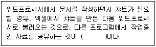
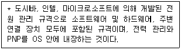
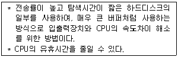
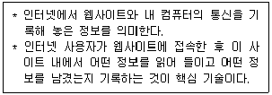
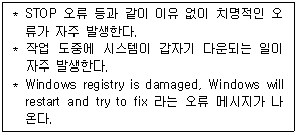
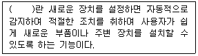

PC정비사-1급 (2016-04-10 기출문제)
1과목: PC운영체제
1. 다음 ( )에 올바른 용어는?

- OLE
- DLL
- INI
- PCX
(정답률: 69%)

2. 다음 설명이 의미하는 용어로 올바른 것은?

- APM(Advanced Power Management)
- ACPI(Advanced Configuration and Power Interface)
- ESCD(Extended System Configuration Data)
- DMI(Desktop Management Interface)
(정답률: 69%)
3. 2013년에 발생한 인질형 악성코드, 랜섬웨어의 일종으로 컴퓨터 내의 모든 파일(OS 파일 포함) 및 네트워크 드라이브파일을 RSA, AES 키로 암호를 걸어, 암호 해독 키를 대가로 300달러 정도의 현금을 요구하는 바이러스는?
- Regin
- Blasterworm
- CIH 바이러스
- CryptoLocker
(정답률: 65%)
4. 다음에서 설명하는 것은?

- Direct Memory Access
- Clocking
- Spooling
- Waiting
(정답률: 68%)
5. Windows 7 Professional 에서 구성 가능한 디스크 어레이 구축 방식 중 데이터 손실의 위험을 감수하더라도 고성능을 추구하기 위해 디스크를 병렬로 배치하는 방식은?
- Raid-0 볼륨
- Raid-1 볼륨
- Raid-4 볼륨
- Raid-5 볼륨
(정답률: 65%)
6. 다음 중 프로세스 스케줄링의 종류가 아닌 것은?
- FIFO(First In First Out)
- Round Robin
- Shortest Job First
- Semaphore
(정답률: 57%)
7. 다음에서 설명하는 것은?

- CGI
- 자바
- 플러그인
- 쿠키
(정답률: 83%)
8. 운영체제에서 CPU에 투입된 프로세스들을 스케쥴링하기 위한 방법에 해당하지 않은 것은?
- Worst-fit(최악적합) 기법
- FIFO 기법
- SJF 기법
- SRT 기법
(정답률: 53%)
9. Windows 7 실행 명령 창에서 레지스트리 편집기프로그램을 실행할 수 있는 명령은?
- sfc
- scanreg
- winzip
- regedit
(정답률: 79%)
10. 운영체제가 아닌 것은?
- Linux
- Windows 7
- Oracle
- MAC OS
(정답률: 85%)
11. WIndows 에서 IP 주소와 DNS 서버 주소 등을 확인하려고 할 때 사용하는 명령어로 올바른 것은?
- ipconfig
- regedit
- bootcfg
- logon
(정답률: 84%)
12. Windows 7 에서 기본적으로 지원하지 않는 파일 시스템은?
- EXT2
- FAT32
- NTFS
- CDFS
(정답률: 60%)
13. 운영체제에 대한 설명 중 올바른 것은?
- Windows XP는 속도가 빠른 플래시 메모리를 캐시 메모리로 이용해 시스템 성능을 향상시키는 '레디부스트' 를 지원한다.
- Windows Vista는 멀티터치 기능이 적용된 MS 최초의 OS이다.
- 그래픽 사용자 인터페이스(GUI)를 이용한 운영체제는 Windows 7, MAC OS-X 등이 있다.
- Windows 7 Professional은 비트라커 드라이브 암호화를 지원한다.
(정답률: 52%)
14. 에러를 자신이 찾아 수정할 수 있는 코드는?
- 패리티 코드(Parity Code)
- 해밍 코드(Hamming Code)
- 그레이 코드(Gray Code)
- BCD코드(Binary Coded Decimal)
(정답률: 73%)
15. "악성코드/바이러스/웜"의 종류로 잘못된 것은?
- 악성 쿠키
- 하이재커
- 스파이웨어
- 쿠키
(정답률: 79%)
2과목: PC주변기기
16. 다음 중 디지털 카메라가 사용하지 않는 인터페이스는?
- IEEE 1394
- IrDA
- USB
- IDE
(정답률: 67%)
17. 이론적으로 가장 빠른 속도를 내는 방식은?
- Serial
- USB 3.0
- Parallel
- USB 1.0
(정답률: 87%)
18. 가장 속도가 빠른 하드디스크 인터페이스는?
- ATA-33
- ATA-100
- PATA3
- SATA2
(정답률: 71%)
19. CPU 클럭을 계산하는 방법으로 올바른 것은?
- 시스템 클럭 + 배율
- 시스템 클럭 * 배율
- 시스템 클럭 / 배율
- 시스템 클럭 = 배율
(정답률: 75%)
20. 서로 다른 디스크를 마치 하나의 디스크인 것처럼 인식을 하도록 하는 기능을 표현하는 용어는?
- FAT32
- RAID
- NTFS
- READ
(정답률: 77%)
21. 주기억 장치와 CPU의 속도차가 크므로, 인스트럭션의 수행 속도를 CPU 속도에 맞추기 위한 완충 장치로 사용하는 메모리는?
- RAM
- ROM
- Cache
- RPROM
(정답률: 79%)
22. 하드디스크를 선택할 때 반드시 살펴보아야 할 것들이 있다. 가장 중요도가 낮은 것은?
- 데이터 전송 속도(Average Transfer Speed)
- 회전 수(Spindle Motor RPM)
- 저장 용량(Storage Capacity)
- 플래터의 두께(Platter Thickness)
(정답률: 85%)
23. 사용자가 프로그램 할 수 없는 ROM은?
- EPROM
- PROM
- EEPROM
- Mask ROM
(정답률: 61%)
24. 손가락의 압력을 감지하는 방법을 사용하여 움직임을 감지하는 지시 장치는?
- 트랙볼
- 휠 마우스
- 터치패드
- 펜 마우스
(정답률: 79%)
25. 분산 처리 환경과 가장 밀접한 관계를 가지는 것은?
- 클라이언트/서버
- 중앙 처리 장치
- 가상 현실
- WYSWYG
(정답률: 70%)
26. 레이저 프린터에 대한 일반적인 설명과 가장 거리가 먼 것은?
- 충격식 프린터이다.
- 레이저빔을 감광 드럼에 비춰 문자나 그림을 인화한 후 토너에 묻혀 인쇄하는 방식이다.
- 고품위의 출력물을 얻을 수 있다.
- 레이저 프린터는 다른 프린터에 비해 일반적으로 출력 속도가 빠르다.
(정답률: 79%)
27. CPU에 마크되어 있는 클럭보다 높게 설정하여 사용하는 것을 의미하는 것은?
- 가상메모리
- 파이프라인
- 슈퍼스칼라
- 오버클러킹
(정답률: 81%)
28. 입력장치 중에서 직접 입력방식이 아닌 장치는?
- 키보드
- OMR
- 마우스
- 디지타이저
(정답률: 77%)
29. PS/2 커넥터에 대한 설명으로 잘못된 것은?
- 5핀으로 구성되어 있다.
- +5V의 전원이 공급된다.
- PS/2는 마우스나 키보드를 PC에 접속하기 위해 IBM이 개발한 포트이다.
- 마우스와 키보드가 사용된다.
(정답률: 52%)
30. 모든 컴퓨터는 네트워크 상에서 자신을 구분하기 위한 유일한 주소를 가지고 있다. 네트워크 인터페이스 카드 제조 시에 부여된 48bit 물리적 주소는?
- TCP 주소
- IP 주소
- MAC 주소
- LAN 주소
(정답률: 77%)
3과목: 디지털 논리회로
31. 비트로 구성되는 EBCDIC 코드가 표현할 수 있는 최대 문자수는?
- 64
- 128
- 256
- 512
(정답률: 52%)
32. 전형적인 NPN형의 실리콘 트랜지스터가 활성영역에 있을 때의 전류관계식은? (단, Ib=베이스전류, Ic=콜렉터 전류, Hfe=전류이득)
- Ib=Ic=0
- Ic=HfeIb
- Ib>=Ics/Hfe
- Ib=Ic<=0
(정답률: 43%)
33. 다음 중 제어장치를 구성하지 않은 것은?
- 명령 레지스터
- 프로그램 계수기
- 프로그램 카운터
- 부호기
(정답률: 35%)
34. 병렬 2진 가산기를 감산기로 사용할 때 필요한 회로는?
- 보수회로
- 캐리(carry) 연산회로
- 시프터(shifter)
- 다수결 회로
(정답률: 45%)
35. 2진수 (11011) 2을 10진수로 변환한 값은?
- 16
- 27
- 39
- 54
(정답률: 69%)
4과목: PC유지보수
36. 두 개 이상의 하드디스크에 있는 할당되지 않은 공간영역을 하나의 논리 볼륨으로 결합하여 사용하고, 하나의 디스크 용량이 가득 차면 다음 디스크로 이어서 기록하여 낭비하는 부분을 줄여서 사용할 수 있는 것은?
- 단순볼륨
- 스팬볼륨
- 스트라이프볼륨
- 미러볼륨
(정답률: 50%)
37. E-IDE 하드디스크를 추가 설치하였으나 인식이 되지 않는 경우 점검 사항으로 잘못된 것은?
- 디스크 Cable들이 올바르게 연결되어 있는지 검사한다.
- CMOS Setup에서 하드디스크 설정을 점검한다.
- 하드디스크 점퍼 스위치가 올바르게 설정되어 있는지 점검한다.
- 기존 디스크가 올바르게 Partition이 되어 있는지 점검한다.
(정답률: 26%)
38. BIOS Setup의 PnP/PCI Configuration은 PCI Slot에 대한 IRQ와 DMA 값을 설정하는 곳이다. 다음 중 구성요소와 설명이 올바르게 짝지어진 것은?
- PnP OS Installed : 'No'로 설정하면 장치자원을 OS에서 관리한다.
- Resources Controlled By : 장착된 확장카드에 대해 IRQ, DMA 설정을 자동으로 하려면 'Auto'로 설정한다.
- Reset Configuration Data : Disabled로 설정할 경우 추가로 장착되는 PnP 장치를 설치할 수 없다.
- DMA-0~DMA-7 assigned to : 메인보드에 통합된 USB Controller나 VGA카드에 IRQ를 할당하려면 'Enable'로 설정한다.
(정답률: 25%)
39. 다음과 같은 증상이 발생했을 때 점검해야 할 장치는?

- HDD
- CPU
- Memory
- FDD
(정답률: 53%)
40. 주기억장치에 제어 신호와 주소 데이터를 보낸 후 내부의 데이터가 중앙 처리 장치에 도달 할 때까지의 시간으로 올바른 것은?
- Seek Time
- Transmission Time
- Cycle Time
- Access Time
(정답률: 63%)
41. Windows의 시스템 리소스를 확보하기 위한 방법으로 잘못된 것은?
- 꼭 필요한 소프트웨어가 아니면 제거한다.
- 시스템 트레이에 등록되는 프로그램은 리소스를 많이 사용하므로 최소화 한다.
- 바탕화면의 테마는 가능하면 많은 색상을 사용하도록 한다.
- 시작 프로그램은 최대한 단순하게 유지한다.
(정답률: 76%)
42. 컴퓨터 시스템 내부에서 부팅 시 가장 먼저 자체 검사를 하는 것은?
- HDD
- CD-ROM
- RAM
- FDD
(정답률: 73%)
43. 다음 괄호에 들어갈 용어로 올바른 것은?

- FTP
- P2P
- PnP
- CnC
(정답률: 82%)
44. PC의 부팅 시간, Windows의 체감 속도, 프로그램의 실행 속도 등 전체적으로 속도가 저하된 경우 그 원인으로 볼 수 없는 것은?
- Windows의 레지스트리 정보가 많아졌기 때문이다.
- 특정 프로그램의 실행 속도나 Windows의 부팅 속도는 하드디스크의 단편화가 그 원인이 된다.
- Windows를 오래 사용하다 보면 각종 DRV, INI 파일 등이 Windows 폴더에 쌓이게 되며, 이러한 정보로 인하여 Windows 속도가 느려지는 원인이 된다.
- DNS 서버의 지정이 잘못되거나 서버에 오류가 발생한 경우 Windows의 프로그램 실행 속도가 느려지는 원인이 된다.
(정답률: 75%)
45. 여러 대의 하드디스크를 RAID로 구성하여 사용하면 전체적인 하드디스크의 안정성과 성능을 높일 수 있다. 다음 RAID 레벨 설명 중 잘못된 것은?
- RAID 0 : 가장 기본적인 구현 방식으로 빠른 입출력이 가능하도록 데이터를 여러 드라이브에 분산 저장한다. 성능은 뛰어나지만 어느 한 드라이브에서 장애가 발생하게 되면 데이터는 손실된다.
- RAID 1 : 하나의 드라이브에 기록되는 모든 데이터를 다른 드라이브에 복사해 놓는 방법으로, 전체 공간의 50% 용량만 데이터를 저장할 수 있지만, 에러 복구가 용이하며 읽기 능력이 뛰어나다.
- RAID 5 : 3개 이상의 드라이브를 사용할 때 가능한 방식으로, 각각의 드라이브에 데이터와 복구시 사용 할 패리티 정보를 저장한다. 구성된 여러 드라이브 중 하나의 디스크만 정상이어도 완벽한 데이터 복구가 가능하다.
- RAID 0+1 : RAID 0과 1의 혼합 방식으로, RAID 0 방식으로 볼륨을 구성한 후 그 볼륨을 Mirroring 하는 방식이다.
(정답률: 52%)
46. 일반적으로 EIDE 방식의 케이블 1개로 하드디스크 2개까지 연결할 수 있다. 이때 중간에 연결된 하드디스크 점퍼값의 설정은?
- Master
- Slave
- Select
- Primary
(정답률: 67%)
47. 컴퓨터를 종료하거나 다시 시작하려고 하면 컴퓨터가 응답하지 않는다. 이에 대한 대처방법으로 적절하지 못한 것은?
- 컴퓨터를 안전 모드에서 종료하거나 다시 시작한다.
- 장치 관리자를 사용하여 문제가 장치 드라이버와 관련이 있는지 확인한다.
- 장시간 컴퓨터를 사용하지 않는다.
- 마지막으로 성공한 구성 기능을 사용하여 Windows 7을 복원한다.
(정답률: 77%)
48. BIOS를 업그레이드할 때 주의할 사항이 아닌 것은?
- BIOS 업그레이드 중간에 전원이 꺼지면 부팅이 안되는 문제가 발생할 수 있다.
- Windows 환경에서 BIOS를 업그레이드 할 수도 있다.
- BIOS 업그레이드 후에는 반드시 Format 하여 Windows를 재설치 해야 한다.
- 최신 버전의 BIOS는 ROM이나 BIN 파일로 제공되는 경우가 많다.
(정답률: 73%)
49. Boot.ini 옵션 중 안전모드로 부팅하는 옵션값은?
- /BOOTLOG
- /SAFEBOOT
- /BASEVIDEO
- /NOGUIBOOT
(정답률: 80%)
50. Windows 최적화에 대한 설명으로 잘못된 것은?
- 불필요한 시작프로그램을 정리하면 부팅시간이 빨라진다.
- 가상 메모리를 최적의 설정 값으로 설정하면 성능이 향상된다.
- 하드디스크의 캐시를 증가시키면 시스템의 속도를 향상시킬 수 있다.
- 시스템 가동 시 플로피 디스크 드라이브 검색을 생략하면 부팅속도가 느려진다.
(정답률: 77%)
5과목: PC네트워크
51. 서비스와 Well-Known Port(잘 알려진 포트)의 연결이 올바른 것은?
- POP3 - TCP 21
- FTP - TCP 25
- HTTP - TCP 80
- DNS - TCP 110
(정답률: 63%)
52. TCP/IP 계층 중에서 응용계층에 해당하며 원격장치의 설정 및 네트워크 사용을 감시하는데 사용하는 프로토콜은?
- Telnet
- FTP
- SNMP
- IPX
(정답률: 53%)
53. S-HTTP와 SSL에 대한 설명으로 옳지 않은 것은?
- 네트워크 구조상 SSL은 S-HTTP보다 위에 위치하고 있다.
- SSL에서는 전자서명과 키 교환을 위해 RSA 방식을 이용한다.
- SSL은 보안기능을 강화하기 위하여 Server 인증, Message의 신뢰성, 무결성을 지원하고 있다.
- SSL은 주고받는 메시지를 암호화하고 그것을 해독하는 기능을 한다.
(정답률: 61%)
54. IP 주소 체계에 있어서 원래 호스트 번호이었던 비트들이 어떻게 서브넷 번호와 호스트 번호로 나뉘었는가를 알 수 있게 해주는 방법이 서브넷 마스크(subnet mask)이다. 서브넷 마스크가 255.255.252.0으로 설정한 경우 각 네트워크마다 설치할 수 있는 최대 호스트의 수는?
- 254
- 510
- 1022
- 2046
(정답률: 61%)
55. 프로토콜의 부하가 적어 분산처리에서 많이 사용되는 인터넷 프로토콜은?
- UDP
- HDLC
- Packet
- Frame
(정답률: 55%)
56. 도시를 대상으로 약 50Km정도의 영역을 담당하는 통신망은?
- VAN(Value Added Network)
- MAN(Metropolitan Area Network)
- LAN(Local Area Network)
- WAN(Wide Area Network)
(정답률: 56%)
57. 컴퓨터에 할당된 IP 주소를 이용하여, 해당 컴퓨터가 속한 네트워크 식별자를 알아내기 위해 사용하며, 또한 클래스 기반의 방법보다 더 많은 식별자를 이용할 수 있도록 하기 위해 사용하는 것은?
- 게이트웨이
- 서브넷 마스크
- DNS 서버
- WINS 서버
(정답률: 50%)
58. IP 주소의 부족에 대한 대안으로 내놓은 IPv6 프로토콜의 길이는?
- 32비트
- 64비트
- 128비트
- 256비트
(정답률: 55%)
59. 인터넷(WWW)의 표준 프로토콜로 올바른 것은?
- Apple Talk
- NetBEUI
- TCP/IP
- RIP
(정답률: 80%)
60. 케이블 모뎀 네트워크에서 ISP가 매설한 광케이블을 가정 에서 쓰는 동축케이블과 연결해 주기 위해 옥외에 설치하는 장비는?
- UTP Cable
- ONU(Optical Network Unit)
- ADSL
- DSLAM(DSL Access Multiplexer)
(정답률: 52%)